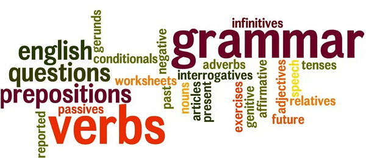

Lesson 1: Basic English Grammar

In this lesson, we will cover the basics of English grammar, including parts of speech, basic tenses, and sentence structure.
Parts of Speech
The basic parts of speech in English are nouns, pronouns, verbs, adjectives, adverbs, prepositions, conjunctions, and interjections.
- Nouns: words that name a person, place, thing, or idea (e.g., cat, city, happiness)
- Pronouns: words that replace nouns (e.g., he, she, it)
- Verbs: words that show action or state of being (e.g., run, is)
- Adjectives: words that describe nouns or pronouns (e.g., happy, large)
- Adverbs: words that describe verbs, adjectives, or other adverbs (e.g., quickly, very)
- Prepositions: words that show relationships between nouns or pronouns and other words in a sentence (e.g., in, on, at)
- Conjunctions: words that join words, phrases, or clauses (e.g., and, but, or)
- Interjections: words that express emotion (e.g., wow, ouch)
Basic Tenses
English has three primary tenses: past, present, and future. Each tense has four aspects: simple, continuous, perfect, and perfect continuous.
- Past Simple: I walked.
- Present Simple: I walk.
- Future Simple: I will walk.
- Past Continuous: I was walking.
- Present Continuous: I am walking.
- Future Continuous: I will be walking.
- Past Perfect: I had walked.
- Present Perfect: I have walked.
- Future Perfect: I will have walked.
- Past Perfect Continuous: I had been walking.
- Present Perfect Continuous: I have been walking.
- Future Perfect Continuous: I will have been walking.
Source: Created for educational purposes.
Go to Exercise 1
Go to Game 1